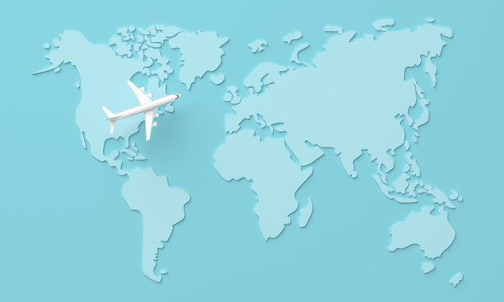

My Work
"Contemporary World EPortfolio"

Media & Globalization
Exploring the relationship between media and global interconnectedness
Global City
Examining the characteristics and dynamics of modern global cities

Global Demography
Exploring population trends and migration patterns in a globalized world
Global Migration
Examining the movement of people across borders and its impact on societies

Environmental Crisis & Sustainable Development
Understanding the challenges and opportunities in addressing global environmental issues
Personal Reflections on Globalization
Personal thoughts and insights on the impact of globalization